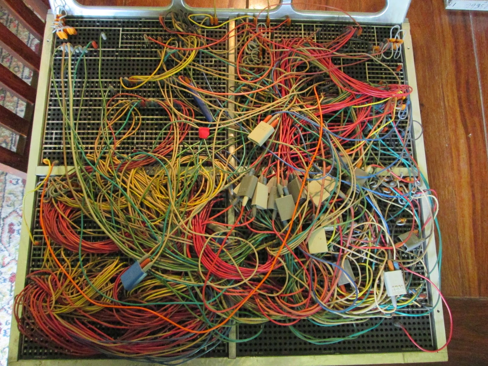

pyramid_oereb DEV Workshop

pyramid_oereb nutzt GNU Make zur Automatisierung
Was gehört dazu?
Wichtige Befehle:
make install
make lint
make tests
make serve
make doc
make clean-all
pyramid_oereb nutzt GitHub / GIT
Was gehört dazu?
- ./.gitattributes (https://www.git-scm.com/docs/gitattributes)
- ./.gitignore (https://git-scm.com/docs/gitignore)
- ./.github/workflows/...
Was macht GitHub (bei jedem Push und jedem PullRequest)
- Tests
- Docs
- Deploy zu PyPi
pyramid_oereb ist Python Package
Was gehört dazu? * ./setup.py * ./setup.cfg * ./requirements.txt / ./requirements-windows.txt und evtl. requirements für Tests * ./README.rst + ./CHANGES.rst * ./MANIFEST.in * Veröffentlichung auf PyPi.org
Auflistung in als Package Requirement:
pyramid_oereb==1.8.0
oder manuelle Installation via PIP:
python3 -m pip install pyramid_oereb==1.8.0
nutzen das Python Package
pyramid_oereb ist ein pyramid Plugin
Was gehört dazu?
- ./production.ini
- ./pyramid_oereb/__init__.py
- ./pyramid_oereb/views/webservice.py
- ./pyramid_oereb/routes.py
- ./pyramid_oereb/lib/renderer/...
Webdienste:
Zusatzwebdienste:
- Logos Kanton / ÖREB etc.
- Gemeindewappen
- Legendensymbole
- SLD für Print
{kind=link}
Es könnte so einfach sein ABER Anpassbarkeit macht Komplexität nötig

Uncle Bobs SOLID principles
- Video & Beschreibung
- Separation von Core und Umsystemen
- Nutzung von Interfaces
- Wann immer möglich Dependency Inversion
- Umsetzung in pyramid_oereb nicht annähernd komplett aber immerhin...